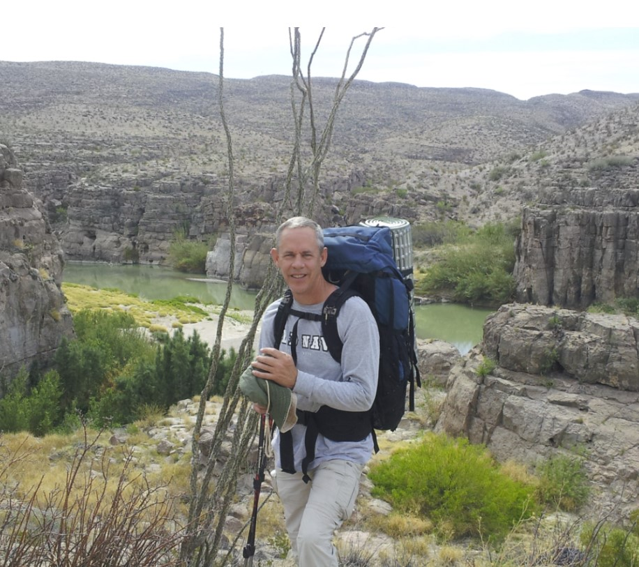

Welcome to my personal website; a work in progress with the help of ChatGPT!
Below are links to three of my favorite hobbies: travel, long distance hiking and storytelling.
Intrepid is my trail name and I was born and raised in Texas, hence the website name. I’ve hiked 1800+ miles in the past few years, mostly along the various Camino Santiago trails in France, Portugal and Spain but also segments of the Pacific Crest and Appalachian Trails. I prefer the Camino because there is an infrastructure of hostels and restaurants that reduce the pack from 60# to around 20# or less. I've even hiked a short portion of the Great Wall of China and several short trails in Antarctica.
The website contains information that you may find of value when planning your early Camino adventures. Once you’ve hiked a trail or two you’ll develop your own “system” but until then perhaps my experiences will help you along “The Way”.